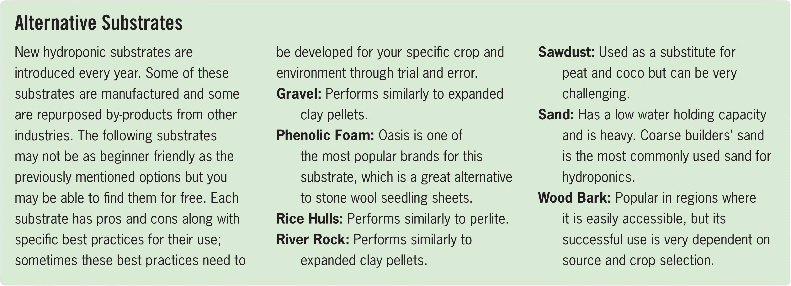

Alternative Substrates New hydroponic substrates are introduced every year. Some of these substrates are manufactured and some are repurposed by-products from other industries. The following substrates may not be as beginner friendly as the previously mentioned options but you may be able to find them for free. Each substrate has pros and cons along with specific best practices for their use; sometimes these best practices need to be developed for your specific crop and environment through trial and error. Gravel: Performs similarly to expanded clay pellets. Phenolic Foam: Oasis is one of the most popular brands for this substrate, which is a great alternative to stone wool seedling sheets. Rice Hulls: Performs similarly to perlite. River Rock: Performs similarly to expanded clay pellets. Sawdust: Used as a substitute for peat and coco but can be very challenging. Sand: Has a low water holding capacity and is heavy. Coarse builders' sand is the most commonly used sand for hydroponics. Wood Bark: Popular in regions where it is easily accessible, but its successful use is very dependent on source and crop selection. Peat/perlite mix Peat Often called sphagnum peat or sphagnum peat moss, peat is partially decayed plant matter harvested from bogs. It has the ability to hold a lot of water yet is lightweight when dry, perfect for shipping. Peat generally has a very low pH around 4. It is often mixed with lime to raise the pH to a more acceptable range for vegetables. Peat can be used as a standalone substrate but it is more commonly used in a mix with perlite. Its availability is largely limited to North America, as the harvesting of this nonrenewable resource is severely restricted in most of the world. Expanded Clay Pellets Sometimes called Hydroton after one of the original manufacturers, and also called LECA (which stands for light expanded clay aggregate), expanded clay pellets are pH neutral, inert, and one of the most popular substrates for both hydroponic and aquaponic media beds. The pores in the pellets can retain some water, yet it is difficult to overwater clay pellets because they are very quick to drain. Always rinse clay pellets before using them in a hydroponic garden. Reusing Substrates River rocks and clay pellets can be washed and reused, but other substrates are usually difficult to reuse in a hydroponic garden. Most hydroponic gardeners will mix used coco, peat, and perlite into their compost or directly into a traditional soil garden to improve water retention and drainage. Some hydroponic gardeners will also break up their used stone wool cubes and slabs into small pieces to mix into their traditional soil garden. EQUIPMENT 27
